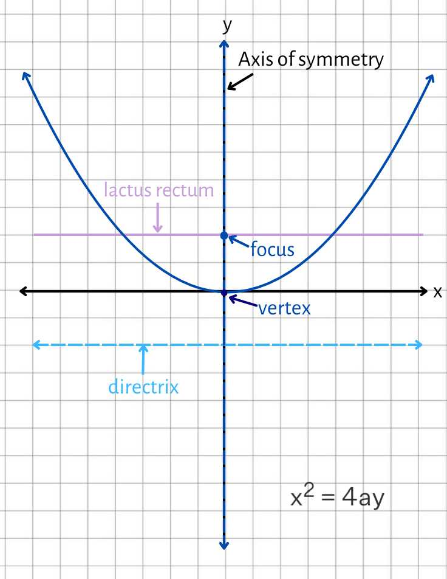

CONICS SECTION
Circle
Ellipse
Parabola
Hyperbola
INTRODUCTION TO CONIC SECTIONS
A conic section is a curve formed by intersecting a plane with a double-napped cone, which has two opposed ends and extends infinitely. The plane's angle of intersection with the cone determines the shape of the conic section. If the plane cuts parallel to the cone's base, it forms a circle. When a plane cuts the cone at an angle but does not intersect the base, it forms an ellipse. If the plane is angled such that it cuts parallel to the side of the cone, the intersection forms a parabola. Finally, if the plane cuts both nappes of the cone, but at an angle steeper than that of the side, a hyperbola is created. These curves—circles, ellipses, parabolas, and hyperbolas—are collectively known as conic sections. Each conic has unique geometric properties and can be defined by specific equations in a coordinate plane, based on the position and orientation of the cone and the intersecting plane.

It is parabola when the plane intersects only one cone to form an unbounded curve.
Degenerate Conics
There are various ways for a plane and the cones to connect, forming what Degenerate conics are defined as a point, one line, or two lines.

Circle
- A circle may also be considered a special kind of ellipse (for the special case when the tilted plane is horizontal).
- The plane intersect horizontally to the nappe of the cone, forming a special kind of ellipse where it's point is equidistant to it's radius.
- The A and C have same coefficient and sign.
- r > 0 means a normal circle.
- r = 0 represents a degenerate circle (a point).
- r < 0 means that the point lies in the opposite direction from where it would be if r were positive, with a magnitude greater than 1.
Parts of a Circle:
Radius - The distance from the center of the circle to any point on its circumference.
Center - The point equidistant from all points on the edge of the circle.
Center at (h, k):
Center at Origin(0, 0):
Standard Form of a Circle:
General Form of a Circle:
Ax²+ Bxy + Cy² + Dx + Ey + F = 0 or Ax² + Cy² + Dx + Ey + F = 0
Parabola
- A parabola is a type of conic section created when a plane cuts through a cone parallel to its side. It consists of all the points in a plane that are equidistant from a fixed point, called the focus, and a fixed line, known as the directrix. This unique property gives the parabola its characteristic U-shape. Depending on how the cone is positioned, a parabola can open upwards, downwards, or sideways.
Parts of Parabola:
Vertex - the sharpest turn point of the parabola.
Focus - a point that determines or defines a parabola. The distance from the focus to the vertex is always specified by p.
Latus Rectum - a line that passes through the focus and is perpendicular to the symmetry axis, with two end points. 4p always determines the distance between the latus rectum endpoints.
Axis of Symmetry - a line that cuts the parabola in half.
Directrix - a perpendicular line to the symmetry axis.
Center at (h, k):
Center at (0, 0):
Orientation of Parabola
- Upward: If the leading coefficient is more than zero, the parabola opens upwards.
- Downward:If the leading coefficient is less than zero, the parabola will open downward.
- Right: The equation illustrates a parabola with a single vertex that opens to the right if the constant is positive.
- Left: The equation illustrates a parabola with a single vertex that opens to the left if the constant is negative.
Standard Form of Parabola
Center at the origin:
| VERTEX | EQUATION | OPENING |
|---|---|---|
| (0, 0) | x² = 4py | Upward |
| (0, 0) | x² = -4py | Downward |
| (0, 0) | y² = 4px | Right |
| (0, 0) | y² = -4px | Left |
Center at (h, k)
| VERTEX | EQUATION | OPENING |
|---|---|---|
| (h, k) | (x-h)² = 4p(y-k) | Upward |
| (h, k) | (x-h)² = -4p(y-k) | Downward |
| (h, k) | (y-k)² = 4p(x-h) | Right |
| (h, k) | (y-k)² = -4p(x-h) | Left |
Understanding p and 4p
1. p: The distance from the vertex to the focus or from the vertex to the directrix of the parabola.
2. 4p: This is a constant used in the standard form of the equation of the parabola. Specifically, it is the coefficient that relates to the focus and directrix.
How to Solve for 4p or p
- To solve for p, you need the equation of the parabola in standard form:
Step 1: Identify the form of the parabola.
Step 2: Solve for p.
General Form of Parabola
1. Parabola with Vertical Axis of Symmetry (opens up or down):
You can rearrange this into the more recognizable quadratic form for a parabola: y = ax² + bx + cy
2. Parabola with Horizontal Axis of Symmetry (opens left or right):
You can rearrange this into:x = ay² + by + cx
Vertex Form
You can rearrange this into:x = ay² + by + cx
1. Vertical axis (opens up or down):y = a(x−h)² + k
2. Horizontal axis (opens left or right):x = a(y−k)² + h
In this form, (h,k) is the vertex of the parabola, and it determines the direction and "width" of the parabola.
Ellipse
- An ellipse is a type of conic section formed when a plane intersects a cone at an angle that is neither parallel nor perpendicular to the cone's base. It is the set of all points in a plane where the sum of the distances from two fixed points, called foci, is constant. In an ellipse, the major axis is the longest diameter, passing through both foci, while the minor axis is perpendicular to it at the center. An ellipse appears oval-shaped, and its eccentricity, which measures the deviation from being a circle, is always between 0 and 1.
Parts of Ellipse:
Center - The central point around which the shape is symmetric. It’s located at the intersection of the ellipse’s major and minor axes, and it’s usually expressed as the coordinates(h,k).
Major axis / Principal Axis - The longest diameter of ellipse that run to center and foci,where it's length is 2a.
Minor axis -The shortest diameter of ellipse that passes to the center and perpendicular to the major axis,where its length is 2b.
Vertex (V1&V2) - The two points on the principal axis, where the length of the two end points of vertex is called major axis.
Co-vertex (W1&W2) - It is the end points of minor axis that is equidistant from the center.The coordinates of co-vertex can be denoted as C = ( 0, ±b).
Foci (F1&F2) - It is the two fixed point on the major axis of ellipse that is equidistant from the center. The coordinates of foci can be denoted as (c, 0) and (-c, 0).
Center at (h, k):
Horizontal
Vertical
Center at (0, 0):
Horizontal
Vertical

Standard Form of Ellipse
Equation of Ellipse:
| CENTER | EQUATION | GRAPH |
|---|---|---|
| (0, 0) | Horizontal | |
| (0, 0) | Vertical | |
| (h, k) | Horizontal | |
| (h, k) | Vertical |
Relation of A and C
A and C have the same sign and A ≠ C.
Standard Form of Ellipse
General Form of Ellipse:
Ax² + Bxy + Cy² + Dx + Ey + F = 0 or Ax² + Cy² + Dx + Ey + F = 0
Solving a, a², 2a, b, b², 2b, c, c², 2c
Step 1: Identify and calculate the axis.
Step 2: Calculate a² and b².
Step 3: Focal distance(c).
Solve for c
Step 4: 2a, 2b, 2c
Hyperbola
- A hyperbola is a type of conic section formed when a plane intersects a double cone at an angle that is steeper than the angle of the cone’s sides. This creates two separate curves, called branches, that are mirror images of each other. Each point on a hyperbola has a unique relationship to two fixed points, known as the foci, such that the difference in distances from any point on the hyperbola to the two foci is constant.
Parts of Hyperbola:
Center - The midpoint between two foci.
Vertices (V1&V2) - The points where the hyperbola intersects its transverse axis.
Conjugate axis - a line that passes through the center of the hyperbola and perpendicular to the transverse axis.The length of conjugate axis js 2b.
Endpoints of conjugate axis (W1&W2) - Points that is located at conjugate axis and perpendicular to transverse axis.
Foci (F1&F2) - Two fixed points along the transverse axis which is used to identify the focus of ellipse.
Asymtotes - Lines that passes through the center that the hyperbola approaches but never intersects.
Transverse axis- A line segment that is connected between two vertices of hyperbola with center (h,k).
Center At (h, k):
Horizontal
Vertical
Center at (0, 0):
Horizontal
Vertical
Standard Form of Hyperbola
Relation of A and C
- A and C have opposite sign.
Center at the origin(0, 0):
| PARTS | ||
|---|---|---|
| Vertices | (a, 0), (-a, 0) | (0, a), (0, -a) |
| Endpoints of Conjugate Axis | (0, b), (0, -b) | (b, 0), (-b, 0) |
| Foci | (c, 0), (-c, 0) | (0, c), (0, -c) |
| Equation of Asymptotes | y = ±(b/a) * x | y = ±(a/b) * x |
| Orientation | Horizontal | Vertical |
Center at (h, k):
| PARTS | ||
|---|---|---|
| Vertices | (h ±a, k) | (h, k ±a) |
| Endpoints of Conjugate Axis | (h, k+b), (h, k-b) | (h+b, k), (h-b, k) |
| Foci | (h ±c, k) | (h, k ±c) |
| Equation of Asymptotes | y = k ±(b/a) (x-h) | y = k ±(a/b) (x-h) |
| Orientation | Horizontal | Vertical |
Solving a, a², 2a, b, b², 2b, c, c², 2c
Step 1: to get the a,b,c you need to get the square of it.
Step 2: Calculate 2a and 2b.
Step 3: Get the value of a²,b²,c²